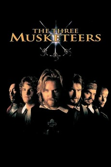
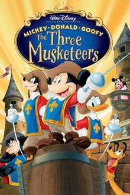

The three musketeers is a tale known by all ages, and even though the generation of today does not have a premier acess to a Three Musketeer film... Kids who grew up in the 2000's or parents that raised children during the time, definetely did. The is a large variety of films for this story. But do any of those iconic movies need a fourth cast member? No.
I would like to think that the 1993 film of the three musketeers is an essential movie for this discussion. Although it it a 90's production, some early 2000's kids might remember this movie as a fever dream. A movie their parent's put on vhs and left on over night. I think it is a great production and it sticks true to it's origin story. This being said, no fourth membe ris needed as it would break away from the parallel to the original tale.
Click Here for Trailer! Now, it is to no surprise that disney decided to tackle this story as their own. Using Mickey, Goofy and Donald Duck as their cast members, their production of this film is top tier. A fourth member would not make this movie work since this is aleady an iconic trio outside the film. Adding a fourth wheel to this amazing trycicle would harm the aesthetic of the movie.
Click Here for Trailer!
Barbie Movies! A quite contreversial topic of the oast, but a very important keystone to early 2000's culture. Barbie has been through a lot, but we have to give kudos to this movie. Having three female protagonist portraying an originally male story line is a huge power ove. This aimed to show girls that they don't need to be princesses. They could wield a swords and kick some butt just as good as boys can (if not beeter!). A fourth barbie would not be necessary as it would distract the audience from barbie- the icon of this franchise.
Click Here for Trailer!